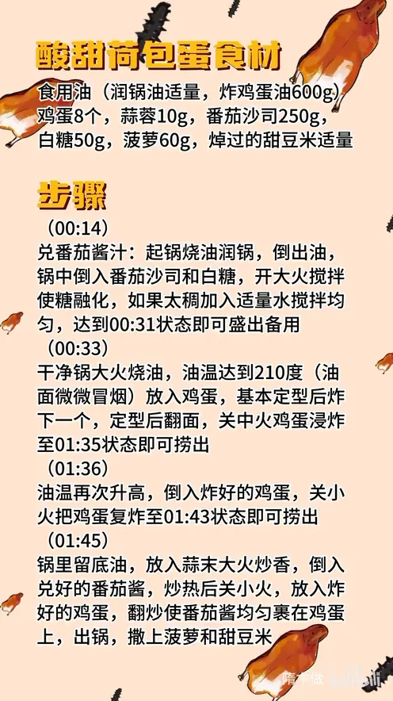

酸甜荷包蛋
隋卞一做。鸡蛋 8 个，210℃ 油温下锅炸定型、再复炸一遍，外壳起脆；番茄沙司 250g 配白糖 50g 熬成酸甜汁，大火裹匀后撒菠萝 60g、甜豆米，酸甜解腻。
原视频：https://www.bilibili.com/video/BV17E421P7j3
食材
鸡蛋、番茄沙司 等 7 样
| 类别 | 用料 | 用量 |
|---|---|---|
| 主料 | 鸡蛋 | 8 个 |
| 调料 | 食用油 | 润锅适量，炸鸡蛋 600g |
| 调料 | 番茄沙司 | 250g |
| 调料 | 白糖 | 50g |
| 辅料 | 蒜蓉 | 10g |
| 辅料 | 菠萝 | 60g |
| 辅料 | 甜豆米（焯过的） | 适量 |
步骤
- 兑番茄酱汁：起锅烧油润锅，把油倒出，锅中倒入 250g 番茄沙司和 50g 白糖，开大火搅拌使糖融化；如果太稠，加入适量水搅匀，熬到顺滑能挂住的状态，盛出备用。
- 炸荷包蛋：干净锅大火烧油，油温达到 210℃（油面微微冒烟）磕入鸡蛋，基本定型后再炸下一个；定型后翻面，关中火浸炸，炸到蛋体膨起、边缘金黄即可捞出。
- 复炸：油温再次升高，倒入炸好的鸡蛋，关小火复炸，炸到外壳更脆捞出。
- 裹汁：锅里留底油，放入蒜蓉大火炒香，倒入兑好的番茄酱，炒热后关小火，放入炸好的鸡蛋，翻炒使番茄酱均匀裹在鸡蛋上，出锅装盘。
- 点缀：撒上菠萝丁和焯过的甜豆米即可。
小贴士
- 炸蛋油总量约 600g，用深一点的锅，一次不要下太多蛋，定型一个再下一个。
- 番茄酱汁太稠会裹不开，加水调到能流动、又能挂住蛋面的稠度最好。
讲解要点
难度：★★☆☆☆（难点是油温要够高，低了蛋白膨不起来还会吸油）
为什么这么做
- 沙司和糖先单独炒化：糖在沙司里化开，酸甜才均匀；直接下蛋再调味，糖化不开会结疙瘩，也容易糊底。
- 稠了就兑水调到能挂住：不同品牌的沙司浓度不一样，调到能流动又能挂住蛋面的状态，太稠裹不开，太稀挂不上。
- 油温要够高（约 210℃）：高温下蛋液瞬间膨起定型，蛋白外壳才脆、不吸油；油温低，鸡蛋摊平、吸油发软。
- 定型一个再下一个：几个蛋同时下锅会粘成一坨，油温也会掉。
- 定型后翻面浸炸：让蛋白里的水分继续往外走，蛋白才会炸松、内部充满小孔，后面才吸得住汁。
- 复炸两遍：第一遍是为酥，第二遍是为焦，炸到焦黄外壳才脆，咬下去有声音。
- 汁炒热后转小火再下蛋：蛋只裹汁不再上色，避免糖和沙司焦糊发苦。
容易翻车
- 油温不够就下蛋，蛋白摊平、吸油发软，炸不出膨起的外壳。
- 几个蛋一起下锅，粘连、油温骤降。
- 只炸一遍，外壳不够焦，裹汁后很快回软。
- 汁太稠或糖没炒化，裹不匀、结块，甚至糊锅。
- 裹汁时火太大，糖和沙司容易焦。
热评补充
- 同一套炸蛋可以换个吃法：炸好的荷包蛋泡进五香卤汁，再放几个虎皮尖椒一起泡，风味很足，也适合不想吃甜口的人家。
原片尾卡

原片文案
AI 字幕校准稿
今天给你们做一个又好吃又便宜的菜，酸甜荷包蛋。上次在长春吃的，成本不超过十块钱。
先调个汁，油润下锅，把沙司倒进去。加入白糖，酸甜口，很多职业厨师也不一定挑得准，你们就按我这个比例做，准没有错。把糖炒化。不同品牌的沙司吸收程度不一样，感觉有点稠就兑点水，到这个吸收程度就可以了。
锅里边烧油，炸这个油温一定要高一些，上次在长春那个蛋白完全都焦了，所以油温必须高。鸡蛋下去之后定型了，再炸下一个。定型之后给它翻一个，稍微浸炸一会，让蛋白更酥一些。
炸到这种程度就可以出锅了。把油温再次升高，我们复炸一遍：第一遍是为了酥，第二遍是为了焦。炸完基本是焦黄色，好了，可以出锅了。锅里留底油，放入蒜末炒香，把兑好的番茄酱倒进去炒热，放入炸好的荷包蛋翻炒两下就能出锅。
我给你们听一下咬这个的声音，哎，无敌了。他把蛋白给炸松了，里面充满了那种小的孔，就跟海绵一样，把酸甜的汁吸得特别特别的饱满。你一咬，酸甜的汁会从嘴巴里面爆开。真跟长春吃的一模一样，太香了。嗯，吃不出一点点油腻的感觉。这种酸甜口，小朋友或者女生看到这道菜就直接走不动路了。配方和比例给大家放到后面了。
整理自「隋卞一做」系列视频，仅供个人学习。